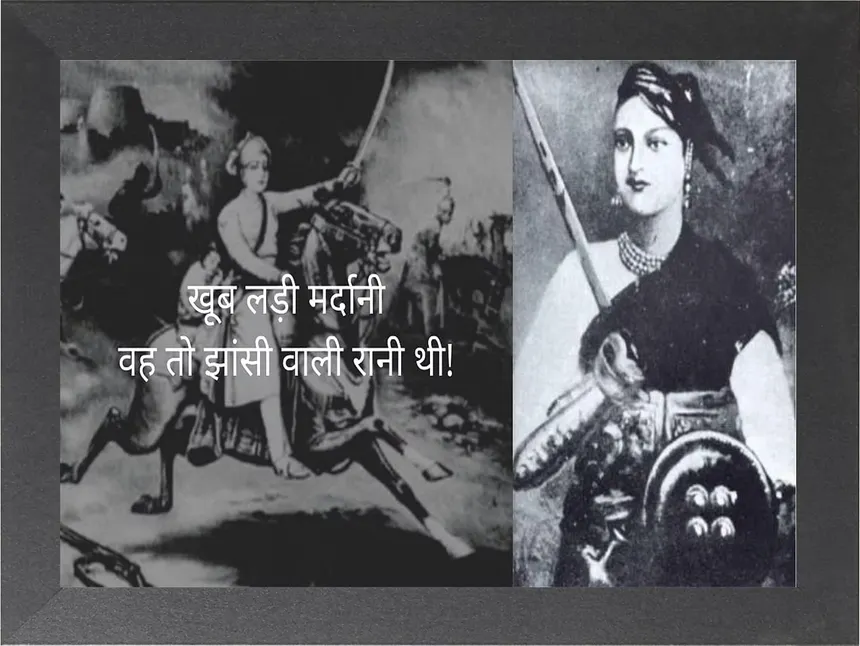

Here is a brief introduction about Rani's life
Rani Lakshmibai, born Manikarnika Tambe on 19 November 1828 in Varanasi, India, was the queen consort of the princely state of Jhansi and a prominent leader during the Indian Rebellion of 1857. She was the daughter of Moropant Tambe and Bhagirathi Sapre. Her father served as a court Peshwa, and she was raised in a household that encouraged her independence, receiving an education at home that included training in horsemanship, shooting, fencing, and martial arts, which was uncommon for girls of her time. She married Maharaja Gangadhar Rao Newalkar of Jhansi in 1842, taking the name Lakshmibai after the Hindu goddess Lakshmi. The couple had a son, Damodar Rao, who died in infancy in 1851. On his deathbed in 1853, Gangadhar Rao adopted a young relative, Anand Rao, who was renamed Damodar Rao, and wrote a letter to the British East India Company requesting that the boy be recognized as heir and that Lakshmibai be allowed to rule as regent until the boy came of age. However, the British Governor-General, Lord Dalhousie, refused to recognize the adoption and annexed Jhansi under the policy of the 'Doctrine of Lapse' in May 1854, despite Lakshmibai's vigorous protests and appeals based on prior treaties. The Indian Rebellion of 1857 began in May 1857, and Lakshmibai took charge of Jhansi's defense after the mutiny of British troops stationed there. She successfully defended the city against attacks from neighboring states and British forces, including a major siege led by Sir Hugh Rose in March 1858. After escaping the siege on horseback, she joined other rebel leaders, including Tantia Tope, and later occupied Gwalior. She died fighting in battle at Kotah ki Serai near Gwalior on 18 June 1858. Rani Lakshmibai is celebrated as a national heroine in modern India, symbolizing resistance against colonial rule and female courage. Her life and legacy have been widely depicted in Indian literature, cinema, and art, although her historical portrayal varies, with some communities offering different interpretations of her actions.